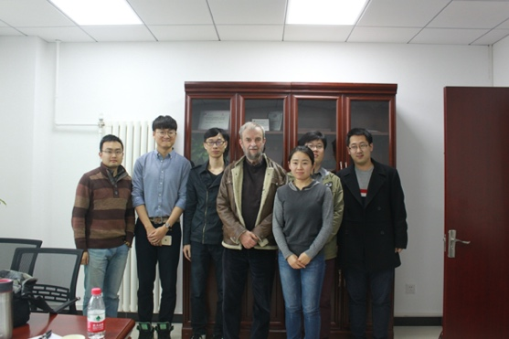
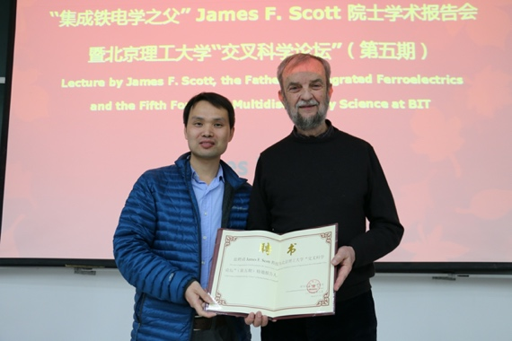
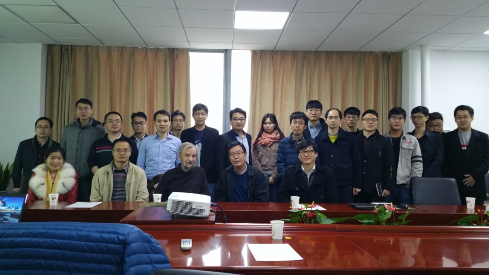

2017年3月，英国皇家学院院士、“集成铁电学之父”、英国University of St. Andrews大学J.F.Scott教授受洪老师邀请访问实验室。Scott教授面向全校师生在“交叉科学论坛”做了“Science and technology of ferroelectric memories -- what is new?”的学术报告，吸引了来自北京大学、复旦大学、中科院物理所等院所共100余名师生参加。Scott教授访问期间，参加了北京理工大学举办的“铁性材料”论坛，对每位报告人的工作进行了详细点评。同时，Scott教授对刚成立不久的先进材料实验室的发展提出了很好的建议。Thank you, Jim!


